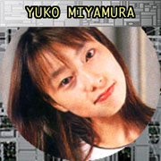
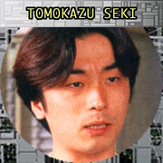
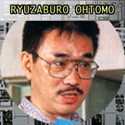
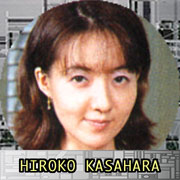
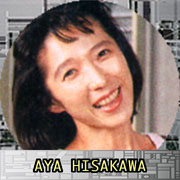

|
緑川光（ショウ）
ショウみたいな熱血主人公タイプっていうのは最近少ないので、
楽しんでやらせていただきました。
本来こういった役は結構好きなんですけど、
クールなキャラクターの割合の方が多いので、
久しぶりに生き生きと演じられて
気分はもう最高でした（笑）。
ショウはどっちかというとメンバーの中では新入りなんですけど、ふてぶてしそうだし、
最後にこいつがやってくれるんじゃないかなっていうのを期待させてくれるようなキャラクターですね。
|
|  |
宮村優子（ティリス）
アフレコをやっていて思ったんですが、とても人間ドラマがあるんです。一人一
人の性格の違いによって、すごい胸がジーンとなるエピソードがいくつかあって、「すご
ーい」と感激しながらやっていました。
今日はアニメパートのアフレコがありまして「あーあそうか。いいなぁ、アニメ
になればなぁ」と、希望的観測をすごく思ってしまいました（笑）。
人を助ける人たちだから、
ドラマも深いのかななんて思いました。
内容もすごく面白かったです。ゲームができたら是非やりたいなと思っています。
（ティリスの絵を見て）かわいいですよね。だけど、ティリスも深い過去があるんですよ。
暗い過去があることを隠してより元気な、っていうキャラクターなんです。
日頃ノー天気な
宮村は、そういう何かけなげな女の子が好きなので、やらせていただいてうれしかったです。
|
|  |
関智一（リード）
私はいつも血の気が多いキャラクターが多く、私自身もどっちかというとせっか
ちなタイプなんです。
リードのような感情を押し殺したクールなキャラクターをやるのは、結構珍し
いということもあり、なかなかとまどいもありましたが、がんばってやりまし
た。
聞き方によっては、やる気がない隊員のようにとられてしまわないように、そこだけ注意
しつつ、皆さんにも楽しんでいただけるといいなぁと思いながらやりましたので、楽しんで下さい。
|
|  |
大友龍三郎（ビッグ）
普段私は悪役っぽいキャラクターが多いんですけど、ビッグというのは自然を愛
し、動物を愛し、それで料理好きで、割と自でやれたんで（笑）楽しくやれました。半分
嘘ですけど（笑）。
ビッグの歳が３５歳で、ホントはそれよりちょっと…だいぶ（笑）多いんですけ
ど、若くつくろうと努力しました。これも半分嘘です（笑）。
|
|  |
笠原弘子（クリス）
賢い役をやらせていただいてうれしいです。このお仕事させてもらったときだ
け、とてもしっかりした自分になれた気がします（笑）。セリフも多く、難しい言葉が多い
ので滑舌が大変で、すごく難しかったんですけど、とてもクリスは頼りにされてるな、と思
うとがんばらなきゃなと思ってました。
クリスはリーダーですから、命令口調じゃないですか、やっぱり。そういうとこ
ろをしっかりいわなくちゃいけないんです。ぼーっとしてたらダメなんで気を付けました。
|
|  |
久川綾（？？？）
私の役はまだお話しできないのですが、とても大事な役だと思っています。今日
はアニメーションの部分があって、あ、みんなこんなかわいいんだ、と思いました。
収録で大変なところはなかったです。
それより（笠原）弘子ちゃんは喋りっぱな
しで大変そうだなって思いました。だってボイスナビゲーション用の音声がすごく多かったので。
映画でも、消防士ものって大好きなんです。消防隊のお兄ちゃんがかっこいいじ
ゃないですか。オレンジ色のつなぎとかも好きなんですけど、命がけで仕事しているああ
いう消防隊の方たちが、私自身の中ではかっこいい存在なんですね。そういう世界がすごく
好きなんで、普段あまりゲームはやらないタイプなんですけど、これはやってみたいですね。
この世界観は、すごく好きだなって思える作品だったんです。
皆さんも是非鎮火するのにがんばって、みんなが演じたスペシャルチームのドラマを楽しんで下さい。
|